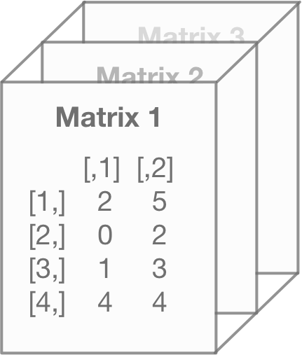

Chapter 5 How to Filter and Transform Data in Base R
In the last chapter, I explained the various object types in R. Now we want to learn how to filter and transform those objects. Notice how I didn’t say filter and transform “data?” That’s because the methods you use to handle data in R heavily depend on the object type.
Before I explain those methods though, we need to cover operators.
5.1 What Are Operators?
If you’re new to programming, then you’re probably not familiar with the term operator. Operators, in plain English, modify or evaluate data. That’s important to data transformation and filtering.
There are two types of operators in R: arithmetic and logical.
Arithmetic operators cover tasks like addition, subtraction, etc. You know? The basic math stuff. This is useful for data transformation and will be used in several examples later. Here are the common arithmetic operators:
| label | symbol |
|---|---|
| addition | + |
| subtraction | - |
| multiplication | * |
| division | / |
| exponent | ^ |
| matrix multiplication | %*% |
| matrix division | %/% |
Logical operators takes the data and generates a TRUE or FALSE output, based on whether the data meets your requirement. This is more helpful for filtering data than transforming. Here are the common logical operators:
| label | symbol |
|---|---|
| less than | < |
| greater than | > |
| less than or equal | <= |
| greater than or equal | >= |
| equal | == |
| does not equal | != |
| and | & |
| or | | |
| in | %in% |
Don’t worry if you’re unsure of how to use these just yet. You’ll see examples for these in the next few sections. This is just for your easy reference.
5.2 How to Filter and Transform Data From a Vector
Vectors are the easiest object type to filter. Same with transforming the data within them.
If you want to reference or view the entire vector, you simply enter the name you assigned the object:
v5 <- c(1,5,5,2,1,4)
v5## [1] 1 5 5 2 1 4(Remember: the <- command allows you to name any object. You can use Option+“-” as a short-cut for <-.)
You also can select a single entry from a vector using the [n] notation:
v5 <- c(1,5,5,2,1,4)
v5[3]## [1] 5As you can see, the script above selected the third value from the vector.
You can select a range of entries by using the [n:n] notation.
v5 <- c(1,5,5,2,1,4)
v5[3:4]## [1] 5 2And, as we’ve seen before, you can create a new vector by referencing old vectors!
v2 <- c("Hola","Howdy","Hello")
v7 <- c(2:4)
v8 <- c(v2,v7)
v8## [1] "Hola" "Howdy" "Hello" "2" "3" "4"You can also use other base R functions to filter data.
For example, you may want to see the minimum or maximum value in a vector. You can use the max() and min() command to do so.
v5## [1] 1 5 5 2 1 4max(v5) # Max value## [1] 5min(v5) # Min value## [1] 1And you can use logical operators as well. In the example below, I use the >= and & operators to filter values:
v5 >= 2 # Values greater than 2## [1] FALSE TRUE TRUE TRUE FALSE TRUEv5 >= 3 & v5 <= 5 # Values between 3 and 5## [1] FALSE TRUE TRUE FALSE FALSE TRUEWe can also use the | operator to find values that meet a criteria. For example, I filter the vector below to “Hola” and “Howdy.”
v2## [1] "Hola" "Howdy" "Hello"v2 == "Hola" | v2 == "Howdy"## [1] TRUE TRUE FALSEYou probably noticed that these logical operators only return a TRUE or FALSE statement. That makes sense since it is a logical argument that’s evaluated. However, we may want to see the actual values that meet the argument. This isn’t important in an example like this, but it does come up later on for more complex objects.
To show the actual values where the logical argument is true, you use the object_name[argument] notation. In the next few examples, I filter the vectors down to values that meet the arguments used in the last few examples:
v5[v5>=2]## [1] 5 5 2 4v5[v5 >= 3 & v5 <= 5]## [1] 5 5 4v2[v2 == "Hola" | v2 == "Howdy"]## [1] "Hola" "Howdy"In the examples above, I simply took the logical argument and plugged it into the brackets.
You can also change data easily when it comes to numeric vectors. For example, down below is a vector of box office revenue for James Bond films. Copy and paste this script into your R console and execute:
gross <-
c(1108561008,1014941117,912257512,880669186,
825110761,756544419,692713752,669789482,
655872400,648514469,622246378,576277964,
543639638,529548711,505899782,491617153,
486468881,478946402,448249281,440759072,
426244352,381088866,321172633,285157191)
grossAs you can see, the values are very large. To make our analysis easier, we can use an arithmetic operator I showed earlier. In this scenario, I want to make the values smaller. So I’m going to divide it using the / operator.
gross/1000000You can also calculate individual values this way too.
gross[4] ## [1] 880669186gross[4]/100000## [1] 8806.692And you can re-assign the value to a particular part of a vector using the methods we described above and the <- notation. For example, we can see below how we re-assign values based on the location.
v8 <- c(1,5,5,2,1,4) # Creates the original vector
v8[6] <- 8 # Replaces the sixth value with an 8
v8[1:3] <- c(4,3,1) # Replaces the first three values
v8## [1] 4 3 1 2 1 85.3 How to Filter and Transform Data From a Matrix
Filtering the data within a matrix is both similar and different than a vector.
It’s similar because we can use the [n] notation to select a single entry. We had done this before with a vector:
v5[2]## [1] 5You can do the same for a matrix. If you run the code below, you’ll re-create and view the matrix we used in the last chapter:
matrix1 <- matrix(c(2,0,1,3),nrow=2,ncol=2)
matrix1## [,1] [,2]
## [1,] 2 1
## [2,] 0 3And here you’ll select the fourth value from that matrix using the [4] command:
matrix1[4]## [1] 3Now that isn’t very practical for a matrix. You may need to select a value from a specific row or column instead. This is where matrices are different from a vector. You’ll want to use the [r,c] command to determine which values you want. In the example below, I select the second row and first column of the matrix.
matrix1[2,1]## [1] 0We can make this easier on ourselves. Instead of specifying row or column numbers, we can give them names. That way, we can use the [row_name,column_name] notation to select data from a matrix. Down below, I give our previously created matrix row and column names.
colnames(matrix1) <- c("Col1","Col2")
rownames(matrix1) <- c("Row1","Row2")
matrix1["Row2","Col1"]## [1] 0We can also apply vector filtering methods to matrices. For example, I want to see what values are greater than 0.
matrix1 > 0 # Returns true or false## Col1 Col2
## Row1 TRUE TRUE
## Row2 FALSE TRUEFunny enough though, you can’t return the actual values that meet this criteria in a matrix form. It’ll turn into a vector. That’s because the output may not have the same number of columns and rows as the original matrix. So R assumes it’ll need a one-dimensional object output.
matrix1[matrix1 > 0]## [1] 2 1 3You can use the same techniques we outlined before with the vectors to transform the data within a matrix. Copy and paste the codes below to your R console and see the results. Feel free to play around with the inputs to see what happens.
matrix1 <- matrix(c(2,0,1,3),nrow=2,ncol=2)
matrix1## [,1] [,2]
## [1,] 2 1
## [2,] 0 3matrix1[3] <- 5
matrix1## [,1] [,2]
## [1,] 2 5
## [2,] 0 3matrix1[,2] <- 2
matrix1## [,1] [,2]
## [1,] 2 2
## [2,] 0 2matrix1[2,2] <- 0
matrix1## [,1] [,2]
## [1,] 2 2
## [2,] 0 0Like the vectors, you can transform the data within the matrix using the arithmetic operators we discussed earlier.
matrix1## [,1] [,2]
## [1,] 2 2
## [2,] 0 0matrix1 + 2## [,1] [,2]
## [1,] 4 4
## [2,] 2 2matrix1 - 4## [,1] [,2]
## [1,] -2 -2
## [2,] -4 -4matrix1 ^ 3## [,1] [,2]
## [1,] 8 8
## [2,] 0 0matrix1 * 5## [,1] [,2]
## [1,] 10 10
## [2,] 0 0You can also use these operators to combine matrices. We’ll need a few matrices to illustrate these examples though. Take the code I have below and execute it in your console, if you want to follow along with my examples.
matrix1 <- matrix(c(2,0,1,3),nrow=2,ncol=2)
matrix1
matrix2 <- matrix(c(5,7),nrow=2)
matrix2
matrix6 <- matrix(c(4,3,1,3),nrow=2,ncol=2)
matrix6It’s important to remember the dimensions of your matrices. Attempting to use addition on two matrices without the same dimensions won’t work.
Matrix 1 and 2 do not have the same dimensions, so it will return an error:
matrix1 + matrix2## Error in matrix1 + matrix2: non-conformable arraysHowever, Matrix 1 and Matrix 6 do have the same dimensions and will execute:
matrix1 + matrix6## [,1] [,2]
## [1,] 6 2
## [2,] 3 6Multiplying two matrices together can be misleading. For example, using the simple * operator will merely multiply the corresponding values in two matrices with the same dimensions. Confused? Look at the two matrices below and then look at the output:
matrix1## [,1] [,2]
## [1,] 2 1
## [2,] 0 3matrix6## [,1] [,2]
## [1,] 4 1
## [2,] 3 3matrix1 * matrix6## [,1] [,2]
## [1,] 8 1
## [2,] 0 9Entry [1,1] of the first matrix is 2. Entry [1,1] of the second matrix is 4. 2 x 4 = 8. That shows us that the multiplication used here is not true matrix multiplication.
If you attempt to use the same * operator for Matrix 1 and Matrix 2 though, you will get an error:
matrix1## [,1] [,2]
## [1,] 2 1
## [2,] 0 3matrix2## [,1]
## [1,] 5
## [2,] 7matrix1 * matrix2## Error in matrix1 * matrix2: non-conformable arraysThat’s because these two matrices do not share the same dimensions.
However, we can generate a single matrix from these two matrices using matrix algebra. To do so, we use the %*% operator.
matrix7 <- matrix1 %*% matrix2
matrix7## [,1]
## [1,] 17
## [2,] 21You can also divide a matrix with another using the %/% operator:
matrix7 %/% matrix2## [,1]
## [1,] 3
## [2,] 3Just remember the difference in how a matrix will interact with the *, %*%, /, and %/% operators.
5.4 How to Filter and Transform Data from Arrays
Selecting data from arrays is similar to what we did before. You can select an individual entry using the [n] command. If you look down below, we re-create the array we used in the last chapter. Copy and paste this code into your R console.
matrix3 <- matrix(c(2,0,1,4,5,2,3,4),nrow=4,ncol=2)
matrix4 <- matrix(c(4,3,5,2,1,6,4,5),nrow=4,ncol=2)
matrix5 <- matrix(c(1,3,1,2,3,5,6,2),nrow=4,ncol=2)
array1 <- array(c(matrix3,matrix4,matrix5),
dim=c(4,2,3))
array1This script will create three separate matrices, like you see below:

And then stacks them into an array:

You can then select the first and twenty-second entry with the scripts below.
array1[1]## [1] 2array1[22]## [1] 5To help you visualize this, I highlighted the fifth and twenty second values from the array in the illustration below:

With arrays, selecting particular columns or rows gets difficult because arrays can have multiple dimensions. That introduces the [r,c,d] notation.
Down below, we select the entire second row of every matrix in our array:
array1[2,,]## [,1] [,2] [,3]
## [1,] 0 3 3
## [2,] 2 6 5You may have noticed that this “flipped” the direction. R isn’t trying to confuse you. It’s merely displaying the previous, individual matrix rows as columns. So column 1 shows the results from matrix 1 in the previous array. Keep this in mind as you interact with arrays. The output may not always be intuitive.
Down below is an illustration of how R processes this command.
First, R finds the second row for each level of the array…

And R then pivots and places those rows into a new array, with each column representing the level of the array…

Just like rows, we can also the second column of every matrix:
array1[,2,]## [,1] [,2] [,3]
## [1,] 5 1 3
## [2,] 2 6 5
## [3,] 3 4 6
## [4,] 4 5 2Down below is an illustration of how R processes this command. R takes the second column from each level of the array and outputs it. Each column of the output represents the level of the array.
We can also select every entry in the third matrix of our array:
array1[,,3]## [,1] [,2]
## [1,] 1 3
## [2,] 3 5
## [3,] 1 6
## [4,] 2 2We can even get a specific entry by selecting the second row, second column of the third matrix in our array:
array1[2,2,3]## [1] 5You can transform arrays in the same way as the other objects. Down below are some examples of how we can use those same techniques. Copy and paste the code below to your own computer to get an idea of how this works.
array1
#Changes the 2nd value of the entire array to a 2
array1[2] <- 2
array1
#Changes the 2nd column of each matrix to a 2
array1[,2,] <- 2
array1
#Changes the 2nd row, 1st column of the 3rd array to 0
array1[2,1,3] <- 0
array1
#Divided the 3rd matrix only by 3
array1[,,3] <- array1[,,3] / 3
array15.5 How to Filter and Transform Data from a Data Frame
There’s two approaches you can take to selecting data from a data frame. There’s the “classic” approach, which I’ll show you in this section, and then there’s the data plyer approach.
The classic approach uses R base to interact with data frames. The data plyer approach uses a package called dplyr to transform the data. The dplyr syntax is far more readable, which is handy for really long scripts. I personally recommend the data plyer approach and will detail it in a chapter called How to Select and Transform Data Using the dplyr Package.
If you don’t want to confuse yourself by learning two different methods, feel free to skip this section and go to the chapter on dplyr. (Will be available in future versions). This section will show the classical approach.
Down below is a script to load the James Bond data frame from the last chapter:
bond <- read.csv("https://raw.githubusercontent.com/taylorrodgers/bond/main/bond.csv")As you can see, a data frame is built using smaller vectors. This gives you a clue to how to select data.
For example, you can re-select individual vectors back out using the $ notation:
bond$filmname(Note: You’ll need to run the scripts from this section on your own console. The output cannot fit cleanly on this pdf file.)
You can also produce a vector using the [,c] notation. What this means is you’re ignoring the row and selecting a column number. We generate the same result as our last section with this method.
bond[,1]If you use the [n] notation, you’ll select the same column as before, but you’re keeping it in a data frame structure.
bond[1]As you may have noticed, the [n] notation in this context works differently than other object types. For data frames, [n] selects the nth column and NOT the nth data entry.
You can use the [n:n] or the [,n:n] notation to select multiple columns. Both will be presented as a data frame.
bond[1:3]
bond[,1:3]To select an individual or range of rows, you use the same [r,c] notation as before:
bond[1:3,] # Selects first three rows## filmname year actor gross
## 1 Skyfall 2012 Daniel Craig 1108.5610
## 2 Thunderball 1965 Sean Connery 1014.9411
## 3 Goldfinger 1964 Sean Connery 912.2575You can also exclude rows or columns using the negative - sign before the row or column numbers:
bond[-1:-20,] # Excludes rows 1 through 20## filmname year actor gross
## 21 Octopussy 1983 Roger Moore 426.2444
## 22 The Living Daylights 1987 Timothy Dalton 381.0889
## 23 A View to a Kill 1985 Roger Moore 321.1726
## 24 Licence to Kill 1989 Timothy Dalton 285.1572bond[3,-4] # Row 3, excluding the 4th column## filmname year actor
## 3 Goldfinger 1964 Sean ConneryJust like the other object types, you can use logical and arithmetic operators, which makes it easy to filter to what you need. Note: this is where things start to get complicated with data frame filtering and why I suggest the dplyr package.
Lets say we want to filter by year. We want only Bond films made after 1990. First, we’ll generate our TRUE / FALSE output. Go ahead and take the script below and run it in your own console:
bond["year"]>=1990Now, you’ll notice that I intentionally kept this as a data frame object type. Had I used the bond$year notation, it would’ve turned it into a vector. This would’ve made further filtering later more difficult.
Next, we need to plug this into another script:
bond[bond["year"]>=1990]## [1] "Skyfall" "Spectre"
## [3] "Casino Royale" "Quantum of Solace"
## [5] "Die Another Day" "Goldeneye"
## [7] "The World is Not Enough" "Tomorrow Never Dies"
## [9] "2012" "2015"
## [11] "2006" "2008"
## [13] "2002" "1995"
## [15] "1999" "1997"
## [17] "Daniel Craig" "Daniel Craig"
## [19] "Daniel Craig" "Daniel Craig"
## [21] "Pierce Brosnan" "Pierce Brosnan"
## [23] "Pierce Brosnan" "Pierce Brosnan"
## [25] "1108.5610" " 880.6692"
## [27] " 669.7895" " 622.2464"
## [29] " 543.6396" " 529.5487"
## [31] " 491.6172" " 478.9464"If you notice though, this doesn’t cleanly give us the information we need.
We need to make sure we preserve the columns. We can do this by simply adding a comma and / or specifying the column numbers:
bond[bond["year"]>=1990,] # Includes all columns## filmname year actor gross
## 1 Skyfall 2012 Daniel Craig 1108.5610
## 4 Spectre 2015 Daniel Craig 880.6692
## 8 Casino Royale 2006 Daniel Craig 669.7895
## 11 Quantum of Solace 2008 Daniel Craig 622.2464
## 13 Die Another Day 2002 Pierce Brosnan 543.6396
## 14 Goldeneye 1995 Pierce Brosnan 529.5487
## 16 The World is Not Enough 1999 Pierce Brosnan 491.6172
## 18 Tomorrow Never Dies 1997 Pierce Brosnan 478.9464bond[bond["year"]>=1990,1:3] # Columns 1 through 3## filmname year actor
## 1 Skyfall 2012 Daniel Craig
## 4 Spectre 2015 Daniel Craig
## 8 Casino Royale 2006 Daniel Craig
## 11 Quantum of Solace 2008 Daniel Craig
## 13 Die Another Day 2002 Pierce Brosnan
## 14 Goldeneye 1995 Pierce Brosnan
## 16 The World is Not Enough 1999 Pierce Brosnan
## 18 Tomorrow Never Dies 1997 Pierce Brosnan5.6 How to Filter a List
Unlike the other object types, I won’t go into detail about transforming a list. The reason is that lists are usually reserved as an output of various functions. Or they’re a handy way of bunching other objects together. If you wanted to transform an object within a list, you’d probably transform that object directly.
Filtering a list is a useful skill to have though.
The script below creates a model using our James Bond data. That creates a list of the various calculations in a regression analysis. The names() function then shows you all the objects contained within the list:
bondmodel <- lm(gross ~ actor,data=bond)
names(bondmodel)(Note: You’ll need to run the scripts from this section on your own console. The output cannot fit cleanly on this pdf file.)
We can select any of these objects within the list with the $, ["object_name"], or [n] notations:
bondmodel$coefficients
bondmodel["coefficients"]
bondmodel[1]Now here’s where things get tricky. Let’s say we want to filter down to a smaller value within the objects of the list. That changes depending on those object types. Confused?
It’s better if we go with a simpler example than the list generated by the lm() function.
Down below, I create a list using some of the other objects we made in this lesson:
v1 <- c(TRUE,FALSE,TRUE)
v2 <- c("Hola","Howdy","Hello")
v3 <- c(1:3)
list1 <- list(vector1=v1,
vector2=v2,
vector3=v3,
matrix1=matrix1,
array1=array1,
bond=bond)I can select any one of those objects from the list using the $ notation:
list1$vector1## [1] TRUE FALSE TRUElist1$matrix1## [,1] [,2]
## [1,] 2 1
## [2,] 0 3Now let’s say I want to select a specific data point from the list. Let’s say I want to know the Bond actors. I know that information was stored within a data frame within the list. To pull that data, I use a combination of filtering techniques.
First, I have to pull the data frame from the list. I do that with the $ notation. Then, we treat the object type as a normal data frame.
Here’s what I mean:
list1$bond[3]
list1$bond$actor
list1$bond["actor"]I do the same with the other object types here:
list1$vector1[3]## [1] TRUElist1$vector3[v3>=2]## [1] 2 3list1$array1[,2,]## [,1] [,2] [,3]
## [1,] 2 2 0.6666667
## [2,] 2 2 0.6666667
## [3,] 2 2 0.6666667
## [4,] 2 2 0.66666675.7 Things to Remember
- How you filter and transform data depends upon the object type
5.8 Exercises
Try to see if you can complete the following exercises. Answers are in the back of the book!
- Filter the following vector to values greater than 2. Display the actual number (not TRUE / FALSE).
q1 <- seq(1,20,2)- Filter the following vector to values between 19 and 20, but only for the first three entries that meet that criteria. (Hint: add
[n:n]for the range of values after you determine which values meet that criteria)
q2 <- round(rnorm(20,32,7),0)- Multiple the following matrices together.
q3_1 <- matrix(round(seq(1,40,3.27),0),3)
q3_2 <- matrix(seq(1,8,1),4)- Subtract 41 from every entry in the second column of the following matrix. Replace the column with those new values.
q4 <- matrix(seq(1,120,4),10,3)- Select the second row from each matrix in the following array. Subtract 5 from those rows.
q5 <- array(data=c(matrix(seq(1,15,1),5,3),
matrix(seq(4,60,4),5,3),
matrix(seq(2,30,2),5,3)),
dim=c(5,3,3))- Filter the James Bond data frame to only films starring Roger Moore.
bond- Filter the James Bond data frame to films starring Sean Connery made after 1966.
bond